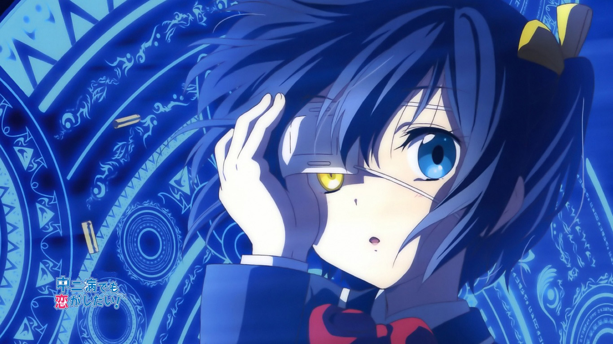
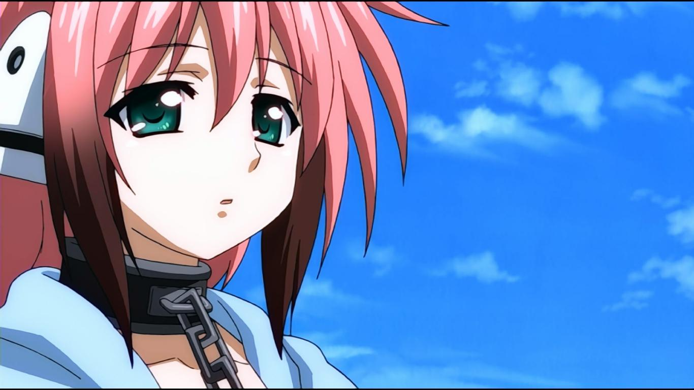
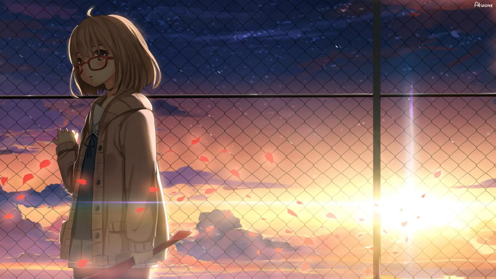

小鸟游六花
富樫勇太的同班同学兼女朋友。父亲的突然离世， 令她至今无法接受这个事实。正在她最痛苦无助的时候， 遇上了中二的富樫勇太。她相信父亲在“不可视境界线”另端的平行世界， 为寻找“不可视境界线”而患上中二病。

伊卡洛斯
型号α，自称是"娱乐用万能天使"， 其实是"战略用万能天使"，西纳普斯称她为“空之女王”。 西纳普斯人畏惧其强大的能力而被封印， 后被代达罗斯解开锁链后坠入地面与樱井智树邂逅并开启铭刻。

栗山未来
高中一年级新生，戴着深蓝色缎带。 拥有操纵血能力的异界士， 个性天然，反应迟钝，内心憧憬着成为普通的女孩子。 喜欢用“我不高兴（不愉快です）”表达自己的任何情感。